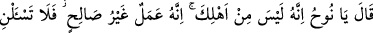
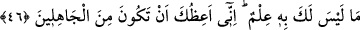

hiçbir hâkimin ilim ve adâlet olmadan bir başkasına üstünlüğü olamaz. Sizin
zamanınızda idareyi üstlenen nice zâlim câhiller vardır ki “akda’l-kudât” yâni
“hâkimler hâkimi” ünvanıyla anılmaktadır. Bundan ibret al ve göz yaşı dök.
Cârullah şöyle der:
Zamanımız kadıları hırsız oldular
Özel değil genel dâvâlarda bile çaldılar
Korkar olduk onlarla tokalaşmaya bile
Yüzüklerimizin taşını aşırırlar diye
Bir hadiste şöyle buyrulmuştur: “Üç grup hâkim vardır: Biri cennette, diğer ikisi
cehennemdedir. Cennette olan, hakkı bilir ve ona göre hükmeder. Diğer ikisine
gelince onlardan birisi, hakkı bilir, fakat ona göre hükmetmez. Bu yüzden de
cehenneme girer. İkincisi ise insanlar arasında cahilce hükmeder. Bu yüzden de
cehenneme girer.” Yani hakkı bilmez, helali haramı birbirine karıştırır.
Şeyh Sa‘dî şöyle der:
Ey ulu, büyük olan kimse! Halka ezâ ve cefâ eyleme
Çünkü cihan bir üslub ve kaide üzere kalmaz
Mazlûmun kurumuş dudağını güldür, sevindir
Çünkü kıyamet günü zâlimin dişlerini sökerler
46. (Allah) buyurdu ki: “Ey Nûh! O asla senin ailenden değildir. Çünkü onun
yaptığı kötü bir iştir. O halde hakkında bilgin olmayan bir şeyi benden isteme! Ben
sana câhillerden olmamanı tavsiye ederim.”
Allah Teâlâ “buyurdu ki: “Ey Nûh! O” yani oğlun “asla senin” kurtarılacaklarına
dair yapılmış olan vaadin içine aldığı “ailenden değildir.” Çünkü o, ailenden istisnâ
edilerek çıkarılmış bulunmaktadır. Çünkü aileden olmadaki temel sebep dinî yakınlıktır.
Mü’min ile kâfir arasında ise hiçbir alâka yoktur.
İbn Abbas, Mücâhid ve İkrime, Ken‘ân’ın Nûh (a.s.)’ın oğlu olduğunu, fakat amel
açısından ona karşı geldiğini belirtirler.
Hikmet ehlinden birisi şöyle der: “Bir oğul babasının yaptıklarını yapmıyorsa, onunla
alâkası kesilmiş demektir. Bir ümmet de peygamberinin yaptığını yapmıyorsa, korkarım
ki aralarındaki alâka kopmak üzeredir.”
Böylece şu açığa çıkıyor ki ilim ve amel olmaksızın birinin nesebinden olmanın, sırf